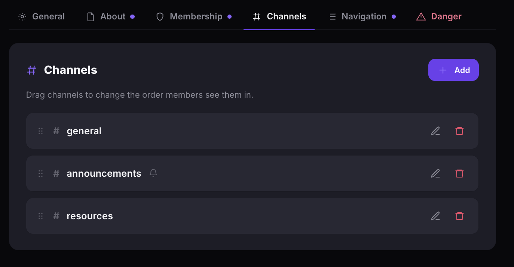
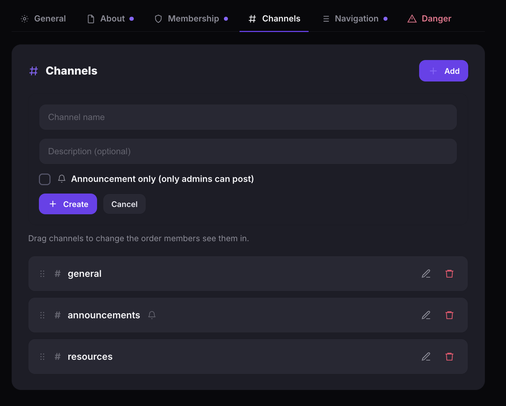

Manage community channels
Channels let members post updates, share resources, and have focused discussions inside your community. Every community starts with three default channels, and you can add more to match your needs.
Default channels
- When you create a community, three channels are added automatically:
- # general — open discussion for all members.
- # announcements — community-wide updates.
- # resources — shared files, links, and reference material.
You can rename, edit, or remove default channels at any time.
Add a channel
- Open your community and click Settings in the left sidebar.
- Click the Channels tab.
- Click + Add.
- Enter a Channel name and an optional Description.
- Check Announcement only (only admins can post) if you want to restrict posting to admins.
- Click + Add.


Announcement-only channels
When Announcement only is enabled, only community admins can create posts in that channel. Members can still view posts and react, but cannot start new threads. This is useful for official updates, policy changes, or curated content.